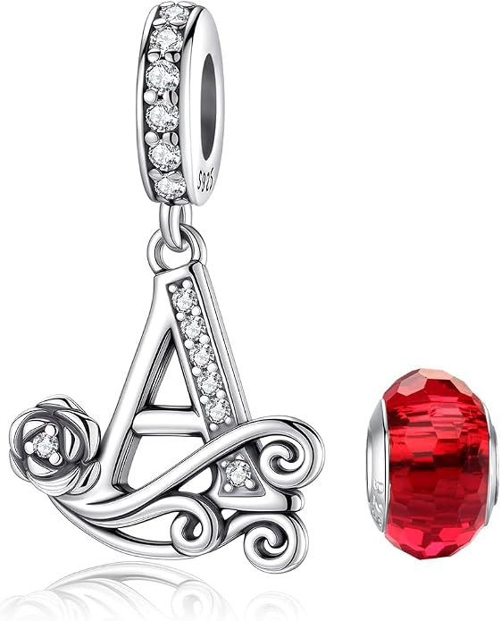

Charm de letra con diseño de mariposa
Charm de letra en plata de ley 925 con un diseño de mariposa. Disponible en diferentes iniciales para personalizar tu pulsera.
Desde 12,20 €
Ver en Amazon#publicidad
Pequeños detalles, grandes historias.
Descubre charms de letras e iniciales de plata de ley 925 para personalizar tu pulsera con una letra especial. Encuentra iniciales de la A a la Z para representar tu nombre, el de una persona importante, una palabra o un significado especial, y crea una joya personalizada para ti o para regalar.
Charm de letra en plata de ley 925 con un diseño de mariposa. Disponible en diferentes iniciales para personalizar tu pulsera.
Desde 12,20 €
Ver en Amazon#publicidad

Diseño de letra acompañado de un corazón con circonita. Una opción delicada para personalizar una pulsera.
Desde 6,99 €
Ver en Amazon#publicidad

Charm de letra decorado con circonitas cúbicas para añadir un toque brillante y elegante a tu pulsera.
Desde 22,99 €
Ver en Amazon#publicidad

Diseño clásico de letra para quienes buscan una forma sencilla y elegante de personalizar su pulsera.
Desde 14,28 €
Ver en Amazon#publicidad

Charm de letra con un diseño inspirado en un pequeño llavero, pensado para dar un estilo diferente a tu pulsera.
Desde 10,99 €
Ver en Amazon#publicidad

Diseño de letra con efecto tridimensional para destacar la inicial elegida en tu pulsera.
Desde 15,99 €
Ver en Amazon#publicidad

Charm de letra con acabado dorado para combinar el significado de una inicial con un estilo diferente.
Desde 11,45 €
Ver en Amazon#publicidad

Una alternativa con acabado rosa para personalizar la pulsera con una inicial y darle un toque más original.
Desde 13,90 €
Ver en Amazon#publicidad

Diseño tridimensional con acabado dorado para conseguir una inicial llamativa y diferente.
Desde 15,99 €
Ver en Amazon#publicidad

Selección de charms de letras con diferentes estilos y diseños para encontrar la inicial que mejor encaje contigo.
Desde 6,99 €
Ver en Amazon#publicidad

Charm con forma de letra A, decorado con pequeñas circonitas y una piedra central en tono rosa. Un diseño elegante para personalizar pulseras y llevar una inicial especial.
Desde 14,90 €
Ver en Amazon#publicidad
Los charms de letras e iniciales son una de las formas más sencillas de convertir una pulsera en una pieza personal. Puedes elegir una inicial que represente tu propio nombre, el de una persona importante para ti o una palabra con un significado especial.
Si buscas un charm inicial para tu pulsera, puedes elegir entre diferentes estilos y diseños. Hay modelos sencillos y otros decorados con corazones, circonitas y diferentes detalles que permiten crear una combinación acorde con tu estilo.
Los charms de letras para pulseras también permiten crear composiciones personalizadas combinando varias iniciales con otros diseños. De esta forma, una pulsera puede representar nombres, personas, recuerdos o momentos importantes.
Puedes buscar la inicial que necesitas para personalizar tu pulsera. Los charms de letras pueden utilizarse para representar nombres, apellidos, personas especiales o incluso formar palabras cortas combinando varias piezas.
Entre las búsquedas más habituales se encuentran diseños como charm letra A, charm letra M y otras iniciales del abecedario. La disponibilidad de cada letra puede variar según el diseño y la variante del producto.
Una inicial puede tener un significado diferente para cada persona. Algunas de las opciones más habituales son utilizar la primera letra de un nombre, crear una combinación de iniciales para una pareja o representar a un familiar.
También puedes combinar varias letras para formar nombres, palabras cortas o iniciales que tengan un significado personal. De esta manera, la pulsera puede convertirse en un recuerdo que representa a personas o momentos importantes.
Un charm inicial de plata también puede ser una opción para regalar, especialmente cuando eliges una letra relacionada con el nombre de la persona que recibirá la pieza.
Antes de elegir un charm de letra, puedes tener en cuenta el estilo de tu pulsera y los charms que ya utilizas. Los diseños sencillos pueden combinar fácilmente con otras piezas, mientras que los modelos con circonitas o acabados especiales pueden convertirse en uno de los elementos protagonistas de la composición.
También es importante comprobar qué inicial necesitas y qué variantes ofrece cada diseño. Si buscas una letra concreta, revisa siempre la variante disponible antes de realizar la compra.
Las letras pueden combinarse con números, meses, animales, símbolos de amor y otros diseños para crear una pulsera que tenga un significado propio. Puedes descubrir también nuestros charms de números y charms de meses y piedras de nacimiento.
Todos nuestros charms de letras e iniciales son de plata de ley 925. Este material contiene un 92,5 % de plata y es muy utilizado en joyería.
Si quieres conocer mejor este material, puedes consultar nuestra guía sobre la plata de ley 925, cómo reconocerla y cómo cuidar tus charms .
Los charms de letras pueden utilizarse para personalizar una pulsera y también pueden formar parte de un collar, siempre que el sistema de enganche sea adecuado para la cadena utilizada.
Nuestros charms son compatibles con marcas principales, pulseras de dijes estándar y pulseras de abalorios de 3 mm. Antes de comprar, comprueba siempre las características y medidas indicadas para cada producto.
Una inicial puede combinarse con otros charms para crear una composición personalizada. Puedes añadir un número relacionado con una fecha, un mes de nacimiento, un animal, un símbolo o un diseño relacionado con una afición.
Si quieres representar una relación o un momento especial, puedes combinar tus iniciales con nuestros charms de amor. También puedes descubrir charms de animales, charms de horóscopo y signos del zodiaco, charms de amuletos y símbolos y charms de ocasiones y hobbies.
Para diseños inspirados en personajes puedes visitar nuestros charms de personajes, mientras que si buscas diseños diferentes puedes descubrir también los charms fluorescentes.
Una letra puede representar un nombre, una inicial, una persona especial, un apellido o cualquier palabra que tenga un significado personal para quien lleva el charm.
La disponibilidad depende del diseño y de las variantes ofrecidas para cada producto. Algunos modelos pueden disponer de diferentes letras, mientras que otros pueden estar disponibles únicamente con determinadas iniciales.
Sí. Puedes combinar varias letras para representar diferentes personas, formar una palabra corta o crear una composición personalizada junto con otros charms.
Una opción sencilla es elegir la inicial del nombre de la persona que recibirá el regalo. También puedes escoger la inicial de alguien importante para ella o combinar varias letras con otros elementos que tengan un significado especial.
Sí. Todos nuestros charms de letras e iniciales son de plata de ley 925.
Están pensados para utilizarse con marcas principales, pulseras de dijes estándar y pulseras de abalorios de 3 mm. Aun así, es recomendable comprobar las características y medidas de cada producto antes de comprarlo.
Sí. Los charms de letras también pueden utilizarse en collares cuando el tamaño y el sistema de enganche son adecuados para la cadena.
Es recomendable mantenerlo alejado de perfumes y productos químicos, limpiarlo suavemente con un paño adecuado y guardarlo en un lugar seco cuando no se utilice.
Sí. Puedes combinar una inicial con números, meses, animales, símbolos, diseños relacionados con el amor, aficiones u otros charms para crear una pulsera personalizada.
Sí. Los precios, la disponibilidad y las variantes pueden cambiar. Antes de realizar una compra, comprueba siempre la información actualizada del producto en Amazon.